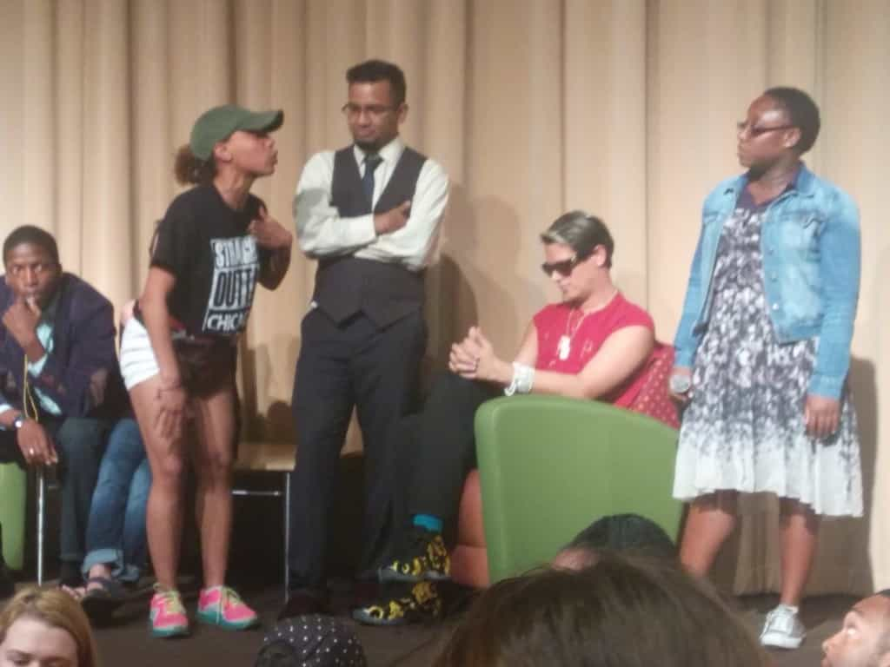
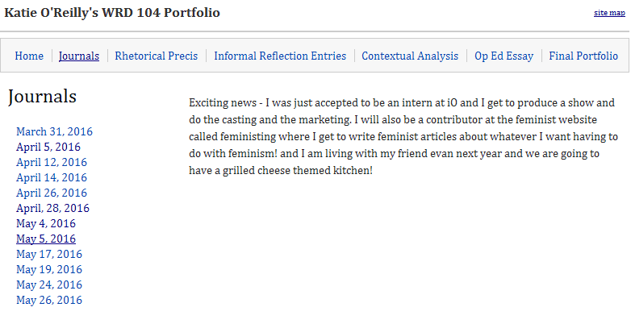

< < < Back
Black Lives Matter Protesters Shut Down Milo Yiannopoulos’ Speech In Chicago (UPDATE) – Return Of Kings
This past Tuesday, Breitbart’s Milo Yiannopoulos was slated to speak at Chicago’s DePaul University as part of his Dangerous Faggot Tour. Unfortunately, angry SJWs and #BlackLivesMatter activists invaded the event and shut it down, threatening Milo with violence and attacking and harassing attendees (yours truly being one of them). Their success was enabled by the DePaul administration’s refusal to allow security and police to eject the disrupters from Milo’s speech, as well as the political connections of one of the rioters.
For the past year, Milo has been touring the U.S., giving talks at college campuses where he espouses his conservative, anti-PC ideas. The Dangerous Faggot Tour has been met with consternation and outrage across the nation, as hypersensitive left-wing crybabies throw hissy fits at the thought of someone to the right of Karl Marx being in their vicinity. Students have been driven to “tears” by Milo’s speeches at universities from Pitt to Michigan, and one particularly upset—and obese—protester at his UMass Amherst talk was dubbed “Trigglypuff” by the Internet due to her epic meltdown.
The cancellation of Milo’s DePaul talk is the first time that his whiny, triggered enemies have succeeded in shutting one of his events down. However, while the petty partisans of #BlackLivesMatter may have won a battle, their success in depriving a gay man of his First Amendment rights—as well as DePaul’s support and encouragement of them—have hurt them in the overall war. Much in the same way that the leftist-instigated riot at Donald Trump’s Chicago rally helped propel him to victory, Milo’s loss in the Windy City benefits opponents of the left.
Timeline Of A Mass Temper Tantrum

I attended Milo’s speech with some of my friends, and it began normally enough, with the man himself being introduced by the DePaul College Republicans. However, 15 minutes into the speech, a pair of black rioters—one male, one female—stormed the stage and took control of the mics. They’ve since been identified as church minister Edward Ward and DePaul student Kayla Johnson; the latter’s mother is the Chicago Police Department’s Director of Administration. Additionally, the protest was organized by S.T.R.O.N.G., a radical black leftist group:
For the next half-hour, Ward, Johnson, and a few other accomplices took over the room, blowing whistles and heckling the audience with chants of “FEEL THE BERN!” and “DUMP THE TRUMP!” while the audience jeered them back. One of the event organizers called both DePaul security and the Chicago police, both of whom refused to eject the protesters, having been ordered by school administrators to hang back (and the latter probably influenced by Johnson’s mommy being a high-ranking public official).
The police’s inaction was even more insulting considering that several days before, DePaul had attempted to shake down the College Republicans for more money for security. They were forced to pony up an extra $1,000 for increased security under threat of cancellation, which Breitbart paid for. Said security did nothing as a pair of leftist radicals hijacked an event that had been paid for and physically threatened Milo on multiple occasions.
After attempting to wrest control back from the protesters, Milo announced that he would be heading over to the president’s office to get some answers as to why security weren’t doing their jobs. Both his fans and hecklers followed him outside, where a horde of social justice warriors had assembled, chanting “RACIST, SEXIST, ANTI-GAY, MILO GO AWAY!” and other hackneyed slogans:
We followed Milo down the street, as he occasionally climbed onto a bench or terrace to guide us. Along the way, I watched leftists physically attack Milo’s fans. One of my friends also reported that the SJWs were stealing Trump hats from people who were wearing them:
A few minutes later, one of the protesters, a fat redhead (UPDATE: the woman has since been identified, see the update at the end of this article), assaulted me and tried to steal my phone after I jokingly told her she needed to drop a few pounds (the second clip in this montage was provided by Daniel Duerst):
After we reached the next building, Milo vanished. I later found out that he’d tried to reenter the room where his speech was supposed to be taking place, but was denied by Rico Tyler, the Associate Vice President of Diversity, Empowerment and Inclusion. Afterwards, fearing for his safety, Milo left the scene in a car. After returning to the student union, my friends and I left for a nearby bar.
Meltdown In The Windy City

Following the end of the event, Milo’s fans and free speech activists took to the Internet, leaving negative reviews of DePaul on the college’s Facebook page and contacting the school’s donors. DePaul President Dennis Holtschneider issued a half-hearted apology the day after in which he sided with the protesters and effectively told Milo he was asking for it. While none of the leftist protesters were arrested, Chicago police arrested conservative journalist Jeremy Segal (aka Rebel Pundit) at the behest of one of the school’s administrators. Both Breitbart and the College Republicans are demanding to be refunded for the money they spent on the event.
Put simply, the leftist attack on Milo was a massive disaster, both for the protesters and DePaul University itself. Free speech activists have been working overtime to expose the corruption at the heart of American leftism, and with leftist rioters having attacked a Trump rally in Albuquerque on the same night as Milo’s speech, America is getting to see what these ambassadors of peace and tolerance are truly like.
UPDATE (5/26/2016)
The woman who assaulted me has been identified as Katie O’Reilly, a DePaul student, left-wing activist and contributor to feminist site Feministing.

I have filed charges against O’Reilly with the Chicago Police Department and will be obtaining a warrant for her arrest tomorrow. Anyone with more information about her is encouraged to contact them or me.
Read More: University Of Manchester Bans Breitbart’s Milo Yiannopoulos From Debate On Censorship